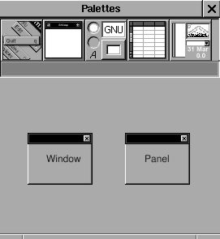
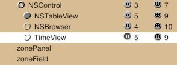
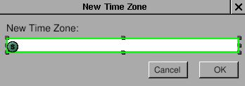

3.3 - New Time Zone Dialog#
In this section, we will create a dialog and add it to our clock application.

You will learn:
Creating a Panel#
A Panel is a special kind of window. Read the Cocoa document for more details: Windows and Panels.
Since I have a clock already, I want to know the time in different time
zones. My idea is that when I click the title of the NSBox, a panel will
show up and ask the time zone. Once the time zone is inputted, it will
display the time in that area. Since NSPanel is a subclass of NSWindow,
the usage of NSPanel is similar to NSWindow. Again, I need a
“controller” to control the “view”, which is NSPanel in this case.
The “view” is generated by Gorm, and I need to write the “controller” by
myself. In this example, I’ll show how to load the gorm file. There are
many built-in panel in GNUstep. I also use one in this example.
First, we need to build the interface for the panel. Open Gorm, and choose the menu item “Document → New Module → New Empty”. Look at the palettes. There is one for “Panel”.
Figure 4-22. Panel in Gorm

Drag the Panel out of Palettes. Build the interface as below.
Figure 4-23. Interface of time zone panel
You can change the size of panel in the inspector. Here are the attributes of the panel.
Figure 4-24. Panel attributes

Controlling the panel#
Now, I have the “view”. Then where is the “controller”? Generally, you can
write a new class as the controller of this view, but this is a small
program, so you don’t have to write a class just for the controller.
So I decide to use the class TimeView as the controller
for this panel. So TimeView acts as the custom view for that
main window interface, and as the controller for the panel. Since
TimeView is the controller of this panel, I need to connect the
outlets and actions. Therefore, I need to create the class TimeView
again in this gorm file, even though there is already one in
TimeMachine.gorm file.
Editor’s note
This seems like a bad idea, but changing it would require a lot of refactoring of this tutorial.
You already know how to create the class TimeView. I add two outlets,
zonePanel and zoneField, and two actions, okAction: and
cancelAction:.
Figure 4-25. Outlets for time zone panel

Figure 4-26. Actions for time zone panel

But rather than creating an instance to connect to the panel, let’s set the
owner of this panel to our TimeView. This reduces the amount of instances in our project.
Select the NSOwner in Gorm main window, then select class TimeView in
the Attributes tab of the inspector.
Figure 4-27. Set NSOwner to TimeView class


By this way, I can connect the panel to the NSOwner, which is an
instance of class TimeView. Connect the two buttons to the actions in
NSOwner, the outlet zoneField to the NSTextField in the panel, and the
outlet zonePanel to the panel. Pay attention to how the NSOwner
connects to the panel.
Figure 4-28. Connect outlet


Save this interface as TimeZonePanel.gorm, and quit Gorm. Don’t
generate the files for class TimeView because I already have the
files. GNUstep can figure out where the classes are and where the
outlets/actions are.
The code#
Now, I need to add the new outlets and actions into the files of
TimeView. Here is the header.
TimeView.h:
#import <AppKit/AppKit.h>
#import "ClockView.h"
@interface TimeView : NSControl
{
id zonePanel;
id zoneField;
NSBox* box;
NSTextField *labelDate, *labelTime;
NSTextField *localDate, *localTime;
NSCalendarDate* date;
ClockView* clockView;
}
- (NSCalendarDate *) date;
- (void) setDate: (NSCalendarDate *) date;
- (void) okAction: (id) sender;
- (void) cancelAction: (id) sender;
@end
I add the outlets and actions by myself.
TimeView.m:
- (void) mouseDown: (NSEvent *) event {
NSRect titleFrame = [box titleRect];
NSPoint windowLocation = [event locationInWindow];
NSPoint viewLocation = [self convertPoint: windowLocation fromView: [self superview]];
BOOL status = NSMouseInRect(viewLocation, titleFrame, NO);
if (status == YES) {
[NSBundle loadNibNamed: @"TimeZonePanel.gorm" owner: self];
[NSApp runModalForWindow: self->zonePanel];
}
}
The method -mouseDown: is called when mouse is clicked within this view.
Here, we calculate whether the mouse is clicked in the area of the title
of the NSBox. If so, we use [NSBundle loadNibNamed: owner:] to load the
window, and [NSApp runModalForWindow] to display it. Read Cocoa’s
document about “How Modal Windows
Work”.
Now, I just need to finish the actions part in TimeView.m.
TimeView.m:
- (void) cancelAction: (id) sender
{
[NSApp abortModal];
[self->zonePanel close];
}
- (void) okAction: (id) sender
{
NSTimeZone* tempZone;
tempZone = [NSTimeZone timeZoneWithName: [zoneField stringValue]];
[NSApp stopModal];
[zonePanel close];
if (tempZone == nil) {
NSRunAlertPanel(@"Warning!",
@"Wrong Time Zone !!",
@"OK", nil, nil);
} else {
[date setTimeZone: tempZone];
[box setTitle: [tempZone description]];
[self setDate: date];
}
}
In method -okAction:, I use a built-in panel, NSRunAlertPanel. There are
several built-in panels in GNUstep ready to use. Now, you can display
the current time in different time zone.
Better keyboard access#
It is inconvenient to use this pop-up panel because you have to click
the NSTextField before typing. Sometimes, it is more convenient to
control the user interface via keyboard rather than mouse.
When a window pop-up, it is the “First Responder” – the first object
to receive events and keypresses. But usually we want some
other objects in this window to receive the keypresses. Therefore, we need
to change the “first responder” of this window by
using [NSWindow makeFirstResponder:].
When I want to use Tab key to switch between different views in the
window, you need to assign the nextKeyView to the next view when the Tab
key is pressed so that the Application Kit knows where the responder should
be.
Finally, when I finish typing in the NSTextField, I want to hit the
Return key to click so that I
don’t need to move my hand out of the keyboard. In this case, since
NSTextField is also a subclass of NSControl, I can set the target and
action of NSTextField to be the same as the NSButton . Therefore, when I hit Return, it is equivalent to clicking on the button.
These are small tune-ups for the application, but it makes it easier to use the application.
First, let’s set the “first responder” of the window to the NSTextField:
TimeView.m:
- (void) mouseDown: (NSEvent *) event
{
NSRect titleFrame = [self->box titleRect];
NSPoint windowLocation = [event locationInWindow];
NSPoint viewLocation = [self convertPoint: windowLocation fromView: [self superview]];
BOOL status = NSMouseInRect(viewLocation, titleFrame, NO);
if (status == YES) {
[NSBundle loadNibNamed: @"TimeZonePanel.gorm" owner: self];
[self->zonePanel makeFirstResponder: zoneField];
[NSApp runModalForWindow: self->zonePanel];
}
}
Only one line is enough. Now, when this panel shows up, the cursor will
automatically be in the NSTextField.
Second, let’s set the target and action of NSTextField to be the same as the NSButton . Open the TimeZonePanel.gorm, and connect the NSTextField to the method -okAction: of the NSOwner. That’s it. Whenever you hit the Return key in the NSTextField, the method -okAction: is
called.
Figure 4-29. Connection NSTextField action



Third, we need to connect the nextKeyView outlet between the views in
the window. I’ll connect the nextKeyView of NSTextField to the NSButton , the nextKeyView outlet of the NSButton to the NSButton ,
and the nextKeyView outlet of the NSButton to the NSTextField. By
doing that, I can switch between these views using the Tab key. Here, I just
show how the nextKeyView of NSTextField connects to the NSButton .
Figure 4-30. Connect nextKeyView


Source code: Panel-src.tar.gz.